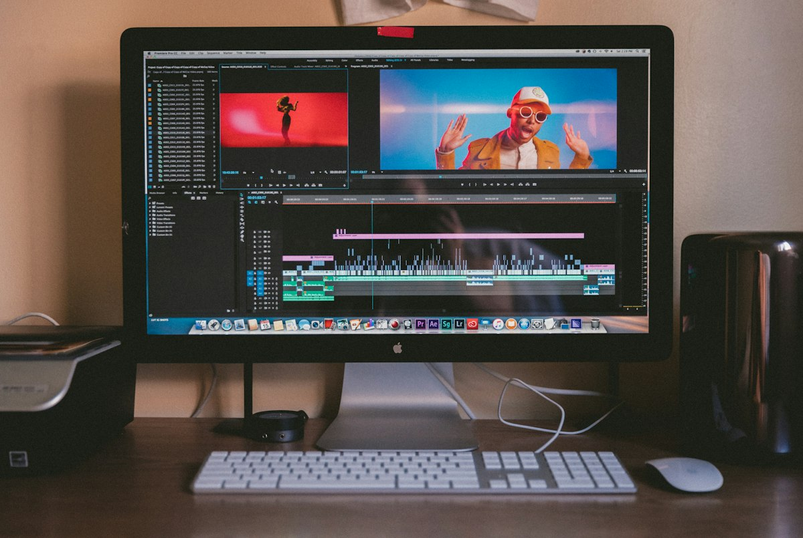

নতুনদের জন্য এআই (AI) ভিডিও তৈরির সম্পূর্ণ নির্দেশিকা: সহজ ধাপে শিখুন
Category: video | Language: bn
বর্তমান যুগে ভিডিও কন্টেন্ট তৈরির ধারণাটি কৃত্রিম বুদ্ধিমত্তা বা এআই (AI)-এর মাধ্যমে আমূল বদলে গেছে। আগে একটি ছোট ভিডিও তৈরি করতেও দামী ক্যামেরা, এডিটিং সফটওয়্যার এবং অনেক সময়ের প্রয়োজন হতো। কিন্তু এখন ভারতের যে কোনো প্রান্ত থেকে একজন সাধারণ মানুষ কেবল একটি স্মার্টফোন বা ল্যাপটপ ব্যবহার করে কয়েক মিনিটের মধ্যে চমৎকার ভিডিও তৈরি করতে পারেন। এই নিবন্ধটি মূলত সেইসব নতুনদের জন্য যারা এআই ভিডিও তৈরির জগত সম্পর্কে জানতে আগ্রহী, কিন্তু কোথা থেকে শুরু করবেন তা বুঝে উঠতে পারছেন না। ইউটিউব চ্যানেল চালানো, সোশ্যাল মিডিয়া মার্কেটিং বা ব্যক্তিগত শখের জন্য এআই ভিডিও কীভাবে কার্যকর হতে পারে, তা এখানে সহজভাবে আলোচনা করা হয়েছে।
এআই ভিডিও তৈরির মূল বিষয়টি বুঝতে হলে আপনাকে 'প্রম্পট' (Prompt) শব্দটি সম্পর্কে জানতে হবে। সহজ ভাষায়, প্রম্পট হলো একটি লিখিত নির্দেশ যা আপনি এআই টুলটিকে দেন। যেমন, আপনি যদি লিখেন— "একটি পাহাড়ি নদীর ধারে সূর্যোদয়ের দৃশ্য", তবে এআই তার ডেটাবেস ব্যবহার করে সেই অনুযায়ী একটি ভিডিও ক্লিপ তৈরি করে দেবে। মূলত দুই ধরনের এআই ভিডিও টুল বেশি জনপ্রিয়: 'টেক্সট-টু-ভিডিও' (যেখানে লেখা থেকে ভিডিও তৈরি হয়) এবং 'ইমেজ-টু-ভিডিও' (যেখানে কোনো স্থির ছবিকে ভিডিওতে রূপান্তর করা হয়)। এছাড়া কিছু টুল আছে যা আপনার দেওয়া স্ক্রিপ্ট অনুযায়ী কৃত্রিম মানুষ বা 'অ্যাভাটার' ব্যবহার করে কথা বলা ভিডিও তৈরি করতে পারে।
ভিডিও তৈরির জন্য প্রথমেই আপনাকে একটি সঠিক প্ল্যাটফর্ম বেছে নিতে হবে। বর্তমানে Runway Gen-2, Pika Labs, এবং InVideo AI-এর মতো টুলগুলো বেশ জনপ্রিয়। আপনি যদি ইউটিউবের জন্য তথ্যমূলক ভিডিও বানাতে চান, তবে InVideo AI বা Fliki ভালো কাজ করবে কারণ এগুলো স্বয়ংক্রিয়ভাবে ভয়েসওভার এবং স্টক ফুটেজ যোগ করে দেয়। আবার যদি আপনি সিনেমাটিক বা শৈল্পিক ভিডিও বানাতে চান, তবে Runway বা Luma Dream Machine ব্যবহার করা বুদ্ধিমানের কাজ হবে। মনে রাখবেন, এই টুলগুলোর বেশিরভাগই 'ফ্রিমিয়াম' মডেলে চলে; অর্থাৎ আপনি শুরুতে কিছু ভিডিও বিনামূল্যে তৈরি করতে পারবেন, কিন্তু পেশাদার এবং জলছাপ (Watermark) বিহীন ভিডিওর জন্য মাসিক সাবস্ক্রিপশন ফি (সাধারণত ৮০০ থেকে ২০০০ টাকার মধ্যে) দিতে হতে পারে।
একটি এআই ভিডিও তৈরির বাস্তবসম্মত ধাপগুলো বেশ সহজ। প্রথম ধাপে, আপনি যে বিষয়ে ভিডিও বানাতে চান তার একটি পরিষ্কার ধারণা বা স্ক্রিপ্ট তৈরি করুন। এরপর আপনার পছন্দের এআই ওয়েবসাইটে লগ-ইন করে 'Create Video' অপশনে যান। সেখানে আপনার প্রম্পটটি লিখুন; প্রম্পট যত বিস্তারিত হবে, ভিডিও তত নিখুঁত হবে। যেমন— "একটি ছোট ছেলে বৃষ্টির মধ্যে ফুটবল খেলছে, সিনেমাটিক লাইটিং, স্লো মোশন"। তৃতীয় ধাপে, ভিডিওর অ্যাসপেক্ট রেশিও (Aspect Ratio) নির্বাচন করুন (ইউটিউবের জন্য ১৬:৯ এবং রিলস বা শর্টসের জন্য ৯:১৬)। সবশেষে 'Generate' বাটনে ক্লিক করে কিছুক্ষণ অপেক্ষা করুন। ভিডিওটি তৈরি হয়ে গেলে আপনি সেটি ডাউনলোড করতে পারেন বা সেখানে থাকা এডিটিং টুল দিয়ে সামান্য পরিবর্তন করে নিতে পারেন।
একটি বাস্তব উদাহরণ দিয়ে বিষয়টি বোঝা যাক। ধরা যাক, কলকাতার একজন গৃহবধূ তার নিজস্ব মশলার ব্যবসার জন্য একটি বিজ্ঞাপন তৈরি করতে চান। তিনি কোনো প্রফেশনাল ভিডিও এডিটর ছাড়াই 'HeyGen' বা 'Synthesia' টুল ব্যবহার করে একটি এআই অ্যাভাটার তৈরি করতে পারেন। সেই অ্যাভাটারটি তার দেওয়া বাংলা স্ক্রিপ্ট অনুযায়ী কথা বলবে এবং মশলার গুণাগুণ বর্ণনা করবে। এর সাথে ব্যাকগ্রাউন্ডে কপিরাইট মুক্ত মিউজিক যোগ করে তিনি ফেসবুক বা ইনস্টাগ্রামে দেওয়ার মতো একটি পেশাদার বিজ্ঞাপন মাত্র আধঘণ্টার মধ্যেই তৈরি করে ফেলতে পারবেন। এটি সময় এবং অর্থ উভয়ই সাশ্রয় করে।
এআই ভিডিওর যেমন অনেক সুবিধা আছে, তেমনি কিছু সীমাবদ্ধতাও রয়েছে যা নতুনদের জানা প্রয়োজন। এআই অনেক সময় মানুষের হাত, আঙুল বা মুখের অভিব্যক্তি সঠিকভাবে ফুটিয়ে তুলতে পারে না, যাকে প্রযুক্তিগত ভাষায় 'আর্টিফ্যাক্টস' (Artifacts) বলা হয়। এছাড়া অনেক সময় এআই আপনার নির্দেশের ভুল ব্যাখ্যা করতে পারে। আরেকটি গুরুত্বপূর্ণ বিষয় হলো ভাষার সীমাবদ্ধতা; অনেক টুল ইংরেজি খুব ভালো বুঝলেও বাংলা ভাষার ক্ষেত্রে কিছুটা দুর্বল হতে পারে। তাই ভিডিও জেনারেট করার পর সেটি ভালো করে পরীক্ষা করে নেওয়া জরুরি। মনে রাখবেন, এআই একটি সহায়ক টুল মাত্র, এটি আপনার সৃজনশীলতাকে প্রতিস্থাপন করতে পারে না বরং গতি বাড়িয়ে দেয়।
নিরাপত্তা এবং নৈতিকতার বিষয়টি এআই ব্যবহারের ক্ষেত্রে অত্যন্ত গুরুত্বপূর্ণ। অন্যের ছবি বা ভিডিও অনুমতি ছাড়া ব্যবহার করে 'ডিপফেক' (Deepfake) ভিডিও তৈরি করা আইনত দণ্ডনীয় অপরাধ এবং এটি চরম অনৈতিক। ইন্টারনেটে এমন অনেক ওয়েবসাইট থাকতে পারে যা বিনামূল্যে এআই ভিডিওর প্রলোভন দেখিয়ে আপনার ব্যক্তিগত তথ্য বা ক্রেডিট কার্ডের ডিটেইলস চুরি করতে পারে; তাই সবসময় নামী এবং বিশ্বস্ত টুল ব্যবহার করুন। এছাড়া এআই দিয়ে তৈরি ভিডিও সোশ্যাল মিডিয়ায় পোস্ট করার সময় অনেক প্ল্যাটফর্মে 'AI Generated' লেবেল ব্যবহার করা বাধ্যতামূলক করা হয়েছে, যা স্বচ্ছতা বজায় রাখতে সাহায্য করে। কোনো বিভ্রান্তিকর তথ্য বা গুজব ছড়াতে এই প্রযুক্তি ব্যবহার করবেন না।
নতুন হিসেবে শুরু করার সময় অনেকে কিছু সাধারণ ভুল করে থাকেন। যেমন— খুব ছোট বা অস্পষ্ট প্রম্পট দেওয়া। আপনি যদি শুধু "একটি বিড়াল" লিখেন, তবে এআই আপনার মনের মতো দৃশ্য তৈরি করতে পারবে না। প্রম্পটে পরিবেশ, রঙ এবং মুড সম্পর্কে বিস্তারিত লিখুন। আরেকটি ভুল হলো সরাসরি এআই-এর তৈরি ভিডিও কোনো এডিটিং ছাড়াই পোস্ট করা। ভিডিওর মান বাড়াতে ক্যাপকাট (CapCut) বা ইনশট (InShot)-এর মতো অ্যাপ ব্যবহার করে সামান্য কালার কারেকশন বা টেক্সট যোগ করলে তা অনেক বেশি আকর্ষণীয় হয়। প্রথমবারেই নিখুঁত ভিডিও আশা করবেন না; এআই-এর সাথে কাজ করা একটি শেখার প্রক্রিয়া যা অভ্যাসের সাথে উন্নত হয়।
পরিশেষে বলা যায়, এআই ভিডিও তৈরির জগতটি এখন সবার জন্য উন্মুক্ত। আপনি যদি একজন শিক্ষার্থী, কন্টেন্ট ক্রিয়েটর বা ছোট উদ্যোক্তা হন, তবে আজই যেকোনো একটি ফ্রি টুল (যেমন- Leonardo.ai বা InVideo) দিয়ে পরীক্ষা শুরু করুন। প্রথমে ছোট ছোট ৫-১০ সেকেন্ডের ক্লিপ তৈরি করার চেষ্টা করুন এবং দেখুন কীভাবে প্রম্পট পরিবর্তন করলে ভিডিওর ধরন বদলে যায়। আপনার পরবর্তী পদক্ষেপ হতে পারে ইউটিউবে এই টুলগুলোর টিউটোরিয়াল দেখা এবং নিয়মিত প্র্যাকটিস করা। প্রযুক্তির এই জোয়ারে নিজেকে শামিল করে আপনিও আপনার সৃজনশীলতাকে বিশ্বের দরবারে তুলে ধরতে পারেন খুব সহজেই।